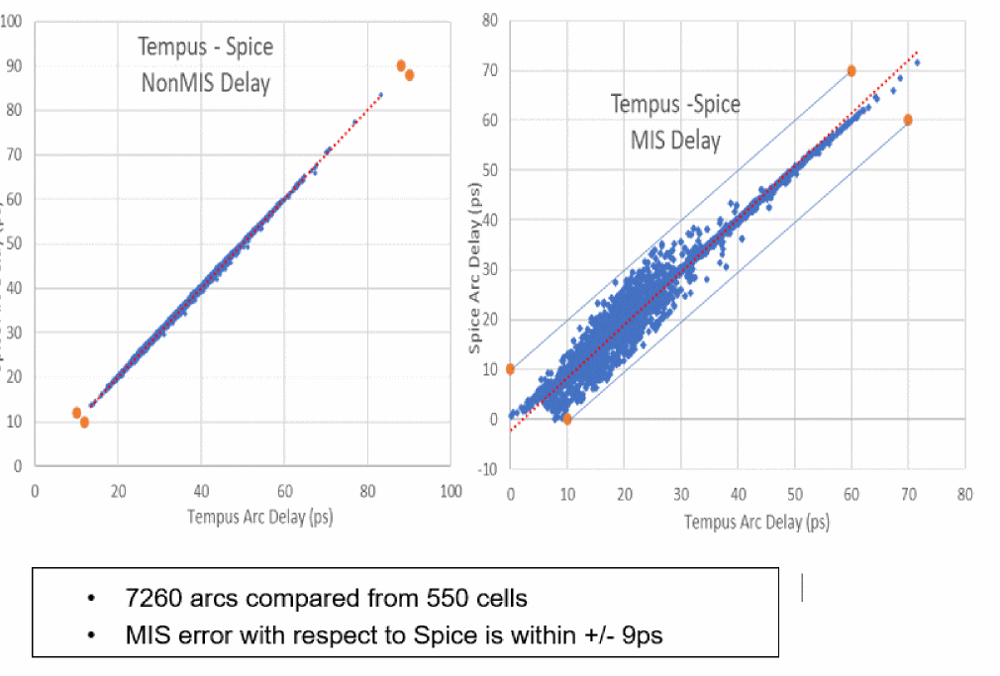
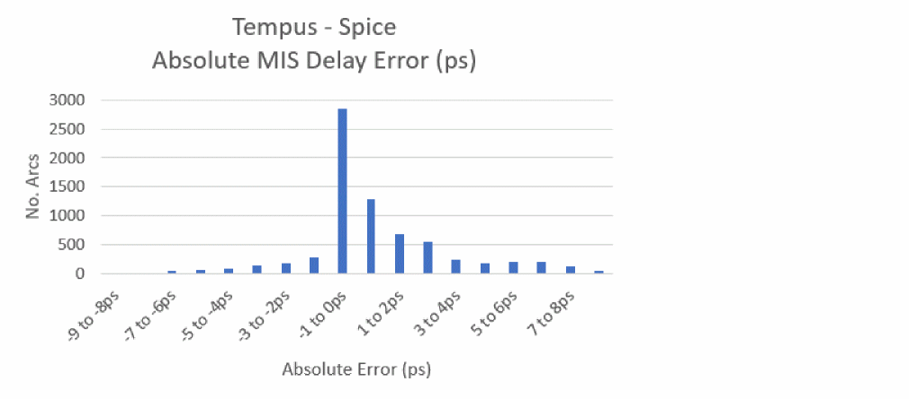

Spice Validation Support and Results
The MIS analysis is supported for Spice-level validation. Spice analysis has to be done for 1-1/2 stages (like SI delay). The path-level Spice correlation may not be possible because side-input-switching times are fixed relative to the main input arrival in the Spice deck. Due to the differences in main input arrivals between Spice and STA, the side input alignment may drift away. The more the errors accumulate across the path, more misalignment happens in the Spice deck, causing the Spice analysis to become irrelevant for MIS. Due to this limitation in Spice analysis, MIS validation has to be done at the stage level.
You can use the following command to enable a MIS-based Spice deck:
create_spice_deck -enable_mis
Figure -112 Spice accuracy results

Figure -113 Negative error: Tempus more pessimistic than Spice

Return to top